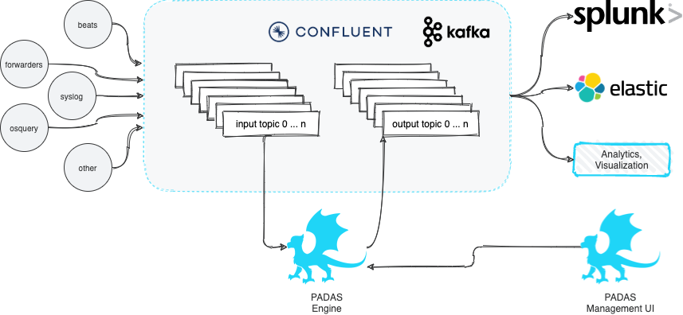

Introduction
What is PADAS?
PADAS is built on top of robust Confluent Kafka Platform and enables organizations to transform, analyze, and filter TBs of streaming data in real-time. The goal is to keep things simple and take some of the burden away from existing SIEM and Analytics platforms by running various pipelines (combination of tasks that perform transformations and detections). PADAS comes with out-of-the-box integration examples (e.g. Winlogbeat, Splunk) and ready-to-implement rules pertinent to MITRE ATT&CK Framework. Any other custom rules can also be added (via PDL) without any dependency to existing SIEM or Analytics infrastructure.
Components
Padas has 2 main components:
- Manager UI: All configuration changes (CRUD - Create, Read, Update, Delete operations) can be performed through Manager web interface. This is an optional but recommended component to manage configurations through Engine API.
- Engine: Reads configurations from existing Padas namespaces (local or topics) and runs assigned (based on
groupsetting) and enabled topologies. Each topology reads from a single source topic, runs one or more pipeline(s), and writes the resulting outputs to one or more output topic(s). Each pipeline consists of one or more task(s) where each task can perform a filter, transform, enrichment, or detection (rules) function. Engine components can be scaled up or down as needed with group assignments to distribute work-load. Please see below for details on concepts.

Basic Concepts
Let's take a closer look at Padas configuration and engine's processing concepts. At a high-level, Padas Engine reads an input topic, processes data (pipelines and tasks) and writes to one or more output topics.

Topology
A topology is simply a group of one or more ordered pipelines where it reads from a single input topic and writes to one or more output topic(s). Both input and output topic(s) are mandatory requirements for a topology that Padas engine runs. A topology consists of one or more ordered pipelines where an output from one pipeline becomes an input for the next pipeline definition.
It's possible to define any number of topologies per Padas Engine, where each topology starts a different processing task within one or more threads. For more detailed architectural description on Kafka streams processor topology please refer to Confluent Documentation.
Pipeline
A pipeline consists of one or more ordered tasks where an output from one task becomes an input for the next task definition. A pipeline is a logical grouping of tasks for specific goals. For example, in terms of processing tasks, a single pipeline with 12 different tasks is the same as having 3 consecutive pipelines with 4 different tasks each.
Task
A task is the single unit of work performed on event data. Each task has the following built-in functions that can perform processing on an event:
APPLY_RULES: Apply predefined rules (per event and/or correlated/aggregated) to streaming events. The input must beJSON.EXTRACT: Extract any event input with provided Regular Expression defition (named groups). The output isJSON.FILTER: Filter an event (keep or drop) based on PDL or regex definition. For PDL, the input must beJSON.OUTPUT_FIELD: Outputs the value of a given field. The input must beJSONand the output isStringrepresentation of the selected field value.PARSE_CSV: Parse inputCSVevent intoJSON.PARSE_KV: Parse input key-value pairs event intoJSON.PDL_EXPRESSION: Allows event data transformation and enrichment via PDL expressions. The input must beJSON.TIMESTAMP: Define a field from within the event data (JSONformatted) to use as the timestamp.
Rule
A rule is a PDL Expression or Correlation that performs query matching and/or aggregations on input events. A rule can have additional annotations (e.g. MITRE ATT&CK Technique IDs) for further processing by other analytics systems. We've also created a tool for security practitioners to convert existing Sigma Rules to PDL (see padas-tools repo for details).